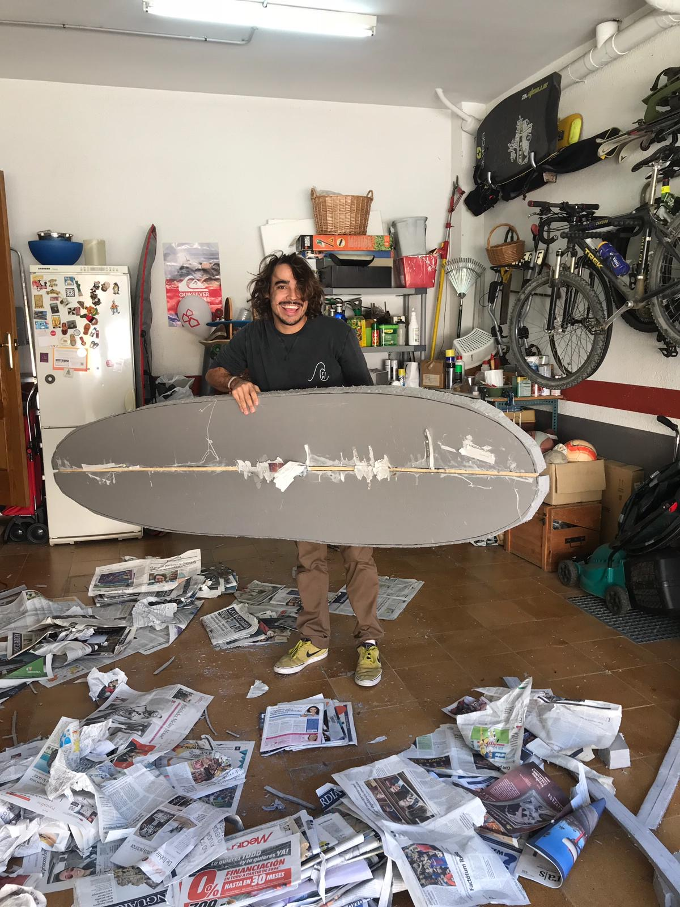
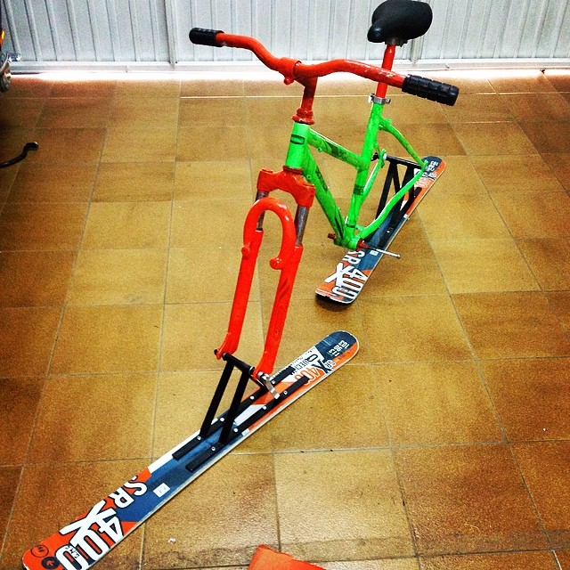

If you have just landed here, I guess you already know my professional skills, if not, check them at my Linkedin profile or my Github.
Welcome to my 'unconventional' resume. If you have arrived here, let me explain something to you about who I am beyond a developer.
The first thing that you need to know about me is that I love to create stuff. I love to start new challenges and I am one of those people who think that if you want something you have to go for it, that impossible is nothing. And I take this mantra with me everywhere.
Some examples of that are:
- When I wanted a surfboard, but I think that price in the store was too high. I just bought the materials and tried to make it myself. I had a lot of hope in that project, but not having the proper tools at home made it impossible to complete. I mess it up and all my hope turned into frustration, but you always learn from your experiences! It made me analyze what I did wrong and I will not make the same mistakes in the future :) 
- Another personal project I developed (this time successfully), is creating what I call a ski-bike. At one point I found myself with a broken bike and a pair of useless skis. I designed a plan, I got all the tools and I materialized my thoughts. I learned quite a bit from this project as well. 
- What's next? I am planning about building my own skateboard, I want to replicate an actual surfboard but with wheels, I only need to find the proper timber.
As you may have deducted now, surfing is something I love, not only the sport but also all the vibes that surround it. Sadly I am not pretty good at it, so I decided to create an Instagram account where I uploaded all the pictures I took while my friends still in the water but I was exhausted already. Check my pictures here :)
Talking about my hobbies, I like sports in general, but running, biking,
skiing, and surfing are what I
like the most. I have even made a couple of short-distance triathlons, which make me pretty proud.
Another thing I like to do in my free time (apart from Netflix what everyone enjoys) I playing
Playstation with my friends.
Traveling is part of my DNA, since I discovered it I can not stop doing it. I have visited plenty of
different counties and cultures, which make me value things in another way. Right now, Africa is the
only continent that I have not visited yet. I have been living in Australia for more than a year (I have
plenty of fun stories to tell you about it) and in Canada for almost a year (I spent the first wave of
the pandemic there). Both these trips have been life-changing but the travel that has impacted me the
most was the time when I went to Moscow on my own.
If you have reached the end of this website, thanks for spending your time reading about me, it means a lot :) If despite that you still want to contact me, please feel free to mail me at guillemmartinezconejos@gmail.com.